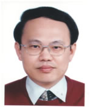

|  | 陳亮嘉 Chen Liang-Chia |
特聘教授 Distinguished Professor |
|
※聯絡資訊Email: lchen@ntu.edu.tw 電話：+886-2-3366 2721 辦公室：工綜 503-5 室 |
|
※學經歷國立臺灣大學, 機械工程學系暨研究所, 製造組, 特聘教授 國立臺北科技大學, 自動化科技研究所, 特聘教授 澳大利亞, CLIPSAL Pty. Ltd., Manufacturing Engineering Department, Research Engineer 南澳大利亞大學, 先進製造與機械工程, 博士 行政院原能會核能研究所, 核燃料及材料組, 助理研究員 臺大慶齡研究中心, 精密量測實驗室, 研究助理 臺灣大學, 機械工程研究所, 碩士 |
|